Kalimat
Разработка дизайна мобильного приложения
для изучения арабского языка

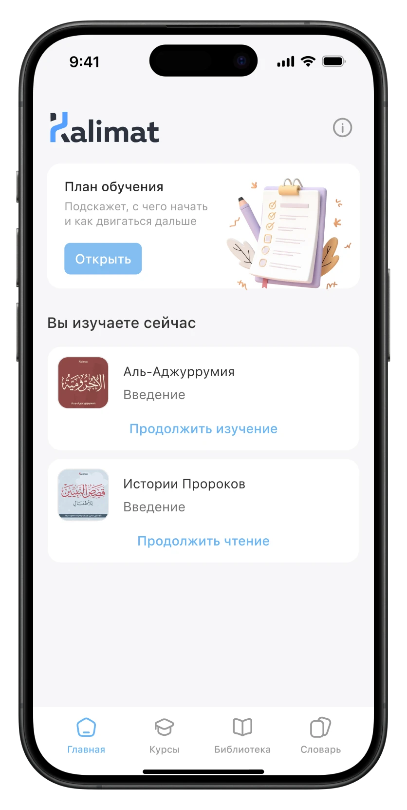
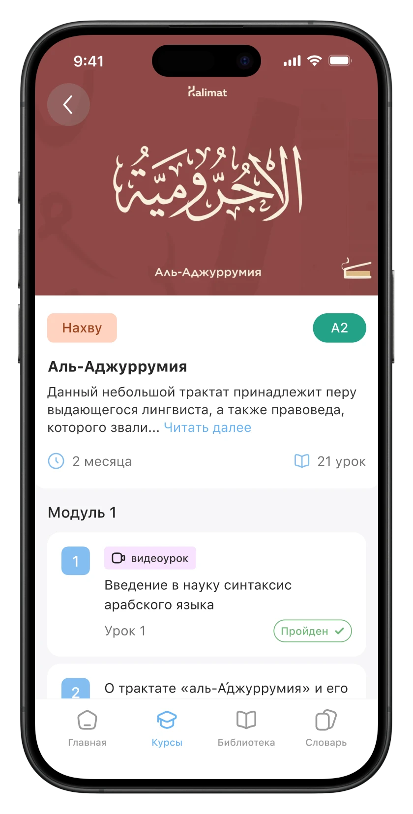
Kalimat — образовательная платформа для изучения арабского языка.
В продукте есть три ключевых раздела: курсы, библиотека и словарь.
Аудитория
Аудитория продукта — русскоязычные пользователи, изучающие арабский язык: начинающие студенты, продолжающие ученики, а также те, кто хочет читать и понимать религиозные тексты глубже.
Моя роль
В команде были основатель проекта, преподаватели, разработчики и я как дизайнер.
Я работала над продуктом end-to-end: от UX-архитектуры и пользовательских сценариев до визуального языка, дизайн-системы и промо-материалов. Также участвовала в формировании продуктовой логики: как связать курсы, библиотеку, словарь и профиль так, чтобы они работали не как отдельные разделы, а как единый учебный путь.
Проблема
До этого проекта у продукта была только веб-версия.
Приложение понадобилось по простой причине: значительная часть людей занимается с телефона. Не потому что с текстом на нём удобнее работать, а потому что телефон всегда под рукой, а язык учат регулярностью, не длительностью.
Браузер этому мешает. Разблокировать телефон, открыть браузер, найти вкладку, дождаться загрузки, авторизоваться — пять шагов до начала занятия. Приложение сводит их к одному касанию.
В обучении это решает больше, чем кажется. Мотивация здесь хрупкая: чем больше препятствий между «хочу позаниматься» и первой строчкой урока, тем выше шанс, что человек передумает. Дальше это требование — убирать шаги — определяло почти каждое решение.
Задача
Сделать приложение с нуля, которое закрывает базовые потребности — учиться по курсам и читать тексты — и выходит сразу на iOS и Android.
Плюс ограничение, влиявшее на всё: небольшая команда и один дизайнер. Значит, решения должны масштабироваться. Новый тип материала обязан встраиваться в существующие паттерны, а не требовать отдельного проектирования.
Исследование
До начала проектирования я посмотрела, как пользователи взаимодействуют с Kalimat на мобильных устройствах, и сопоставила это с существующей веб-версией.
В веб-версии уже были курсы, библиотека и словарь. Проблема была в самом сценарии доступа: чтобы начать заниматься с телефона, пользователю приходилось каждый раз проходить несколько шагов через браузер.
При этом изучение языка строится на регулярности. Пользователь не обязательно выделяет на занятие час — часто это короткие свободные промежутки в течение дня.
- быстро переходить к обучению;
- продолжать начатый материал без лишних действий;
- удобно работать с контентом на небольшом экране;
- сохранять доступ к материалам без интернета;
- не перегружать пользователя большим количеством вариантов.
Главный вывод
Мобильное приложение должно не просто повторять веб-версию, а сокращать путь до обучения и поддерживать короткие регулярные сессии.
Продуктовая логика
На основе исследования я определила несколько принципов, вокруг которых строилось приложение.
1. Сначала действие
Первый экран должен помогать начать обучение, а не знакомить пользователя со всеми возможностями продукта. Поэтому в приоритете — текущий материал и быстрый переход к нему.
2. Один продукт — несколько сценариев
Курсы, библиотека и словарь решают разные задачи, но должны ощущаться частью одного продукта. Поэтому я построила единую навигацию и общие паттерны для разных типов контента.
3. Короткая сессия — полноценное занятие
Мобильное обучение не должно требовать много свободного времени. Материал разбит на небольшие части, чтобы пользователь мог пройти урок или главу за короткую сессию и вернуться позже.
4. Контент должен работать без связи
Если обучение зависит от качества интернета, регулярность легко нарушается. Поэтому материалы доступны офлайн: пользователю достаточно иметь время для занятия, а не время и стабильное соединение.
5. Не добавлять удержание раньше времени
Мы сознательно не стали перегружать первую версию механиками вроде рейтингов, ачивок и рекомендаций. Сначала нужно было сделать базовый сценарий обучения удобным и сформировать данные для будущих механик.
Мы не искали новые образовательные функции. Мы исследовали, какие барьеры возникают именно при обучении с телефона.
Проектирование
User flow. Разложила три ключевых сценария — обучение, чтение и работу со словами — на последовательность действий. Так стало видно, где путь пользователя можно сократить и какие сценарии требуют приоритета.
Визуальная система. Опиралась на язык веб-версии: сохранила визуальную иерархию, палитру и принципы акцентирования. Задача была не создать отдельный мобильный стиль, а сохранить узнаваемость Kalimat при переходе между устройствами.
Дизайн-система. Собрала библиотеку компонентов для основных сценариев: карточки материалов, уровни и жанры, состояния списков и элементы уроков. Общие компоненты с веб-версией помогли сохранить единый язык продукта и быстрее масштабировать интерфейс.
Кроссплатформенность. Приложение разрабатывалось сразу для iOS и Android, поэтому я заложила единые компоненты и паттерны. Различия между платформами оставила только там, где они действительно влияют на пользовательский опыт.
Главная
Главная стала точкой входа в обучение. Здесь пользователь видит общий план изучения арабского, который задаёт структуру и последовательность обучения, а ниже — недавние материалы, чтобы быстро вернуться к тому, на чём остановился.
Так экран одновременно отвечает на два вопроса: «что мне изучать?» и «где я был в прошлый раз?».
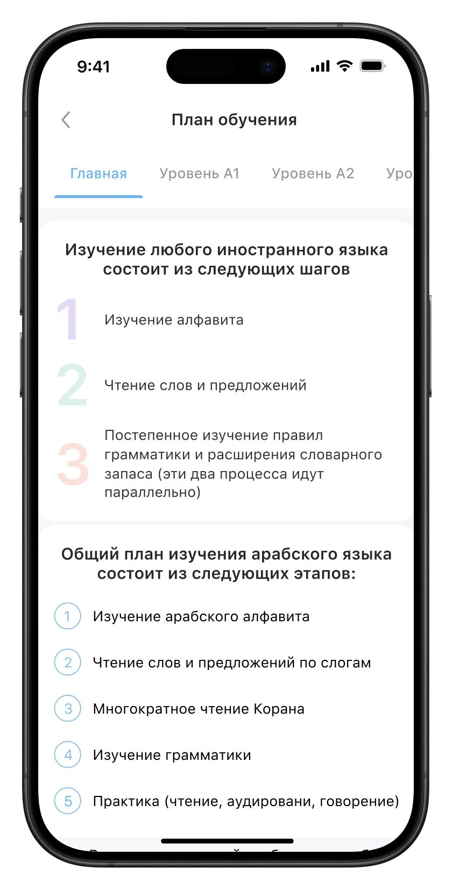
Библиотека
В разделе собраны книги и тексты на арабском с двумя форматами перевода: параллельным и пословным.
Подбор материала по уровню. Структурировала библиотеку так, чтобы выбор начинался не с названия книги, а с уровня, соответствующего знаниям пользователя.
Навигация внутри книги. Содержание и главы позволяют быстро перемещаться по большому объёму материала и возвращаться к нужному месту.
Чтение с переводом. Библиотека поддерживает два режима: параллельный и пословный перевод. Пользователь может выбрать подходящий способ работы с текстом в зависимости от своей задачи. Параллельный перевод помогает быстро понять общий смысл, а пословный — разобрать предложение и понять значение каждого слова.
Лексика внутри чтения. Новые слова, встречающиеся во время чтения, собраны в отдельном разделе. Пользователь может вернуться к ним после чтения и продолжить работу с лексикой уже вне контекста конкретного текста.
Так библиотека связывает два сценария: понимание текста и работу с новой лексикой.
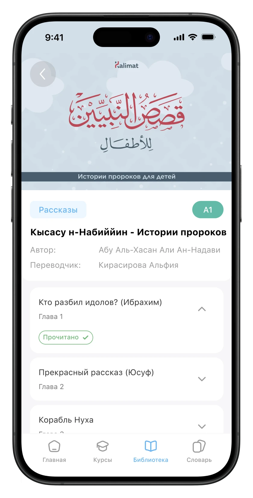
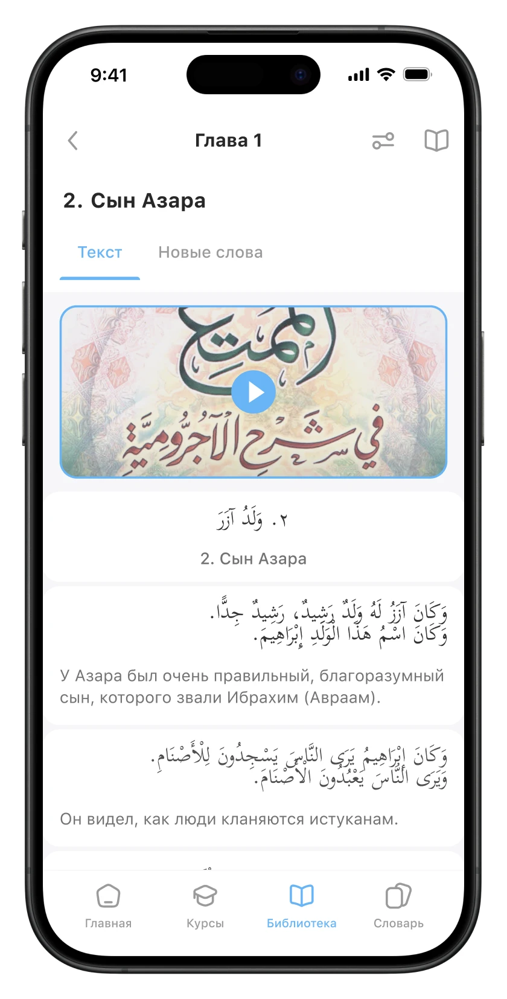
Курсы
В разделе собраны учебные курсы по готовым программам. Каждый курс имеет структуру из модулей и уроков, чтобы пользователю было проще двигаться по программе.
- Навигация по уровням и категориям. Курсы структурированы по уровням владения языком и категориям. Это помогает пользователю сразу сузить выбор и найти подходящий материал вместо поиска по общему списку.
- Курс → модули → уроки. Страница курса показывает его структуру: уроки сгруппированы по модулям и идут последовательно. Пользователь заранее понимает объём курса и может быстро определить, где он находится в обучении.
- Теория разбита на части. Страница урока объединяет видеоматериал и текстовую теорию. Грамматические темы разделены на отдельные блоки и дополнены содержанием — так с большим объёмом текста проще взаимодействовать и возвращаться к нужной части.
- Теория переходит в практику. После изучения материала пользователь переходит к упражнениям по тому же уроку. Теория и практика объединены в рамках одного учебного сценария, поэтому не нужно искать задания отдельно.
- Новые слова из контекста урока. Отдельная вкладка собирает новую лексику, связанную с конкретным уроком. Пользователь может работать со словами сразу после изучения темы, сохраняя связь между новой лексикой и контекстом.
- Видимый статус обучения. Уроки имеют состояния «пройден» и «не пройден». Это позволяет быстро ориентироваться в курсе, видеть уже освоенный материал и понимать, с какого места продолжить обучение.
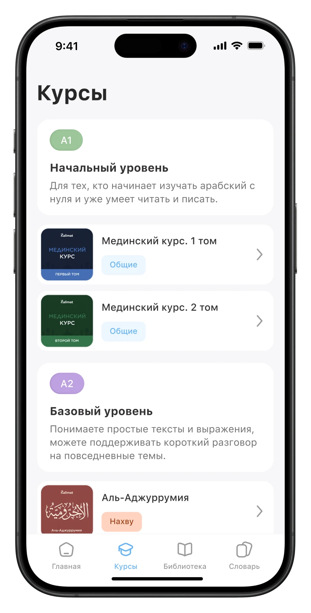
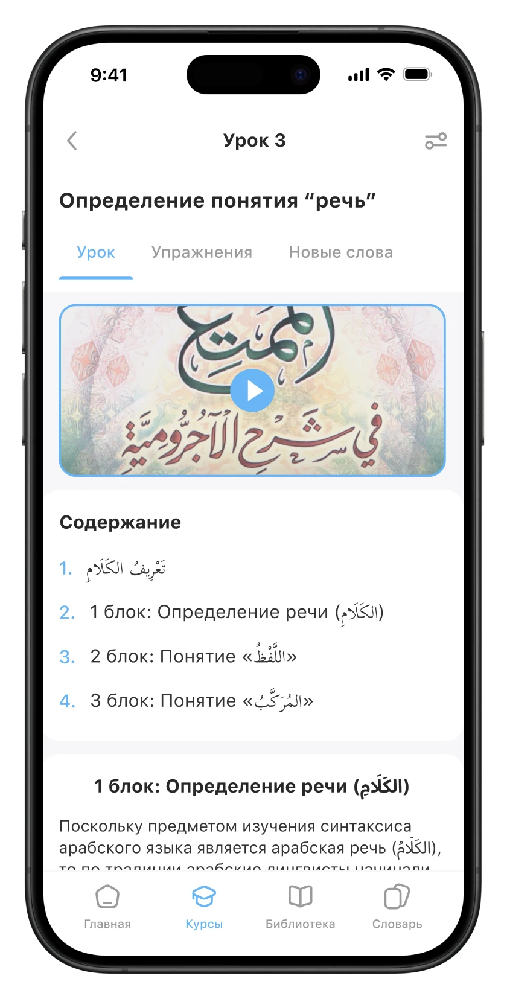
Расширенные настройки
Пользователь может настроить отображение текста под свой способ обучения: выбрать нужные параметры и управлять тем, какая информация отображается.
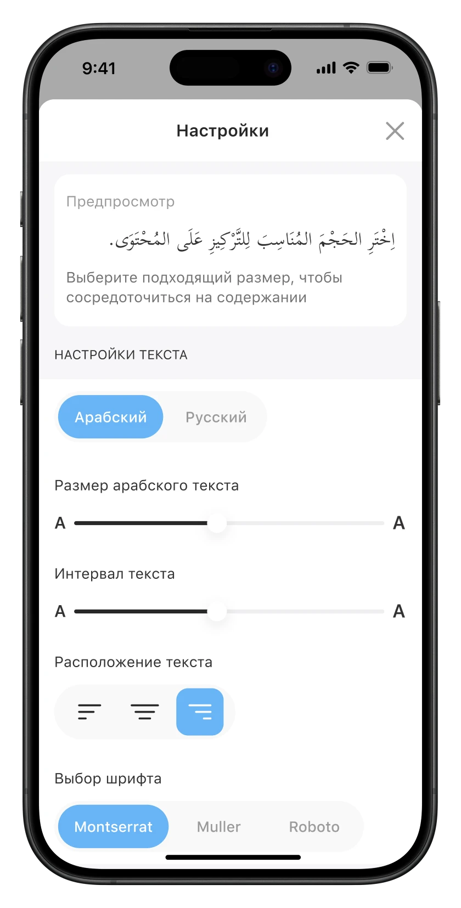
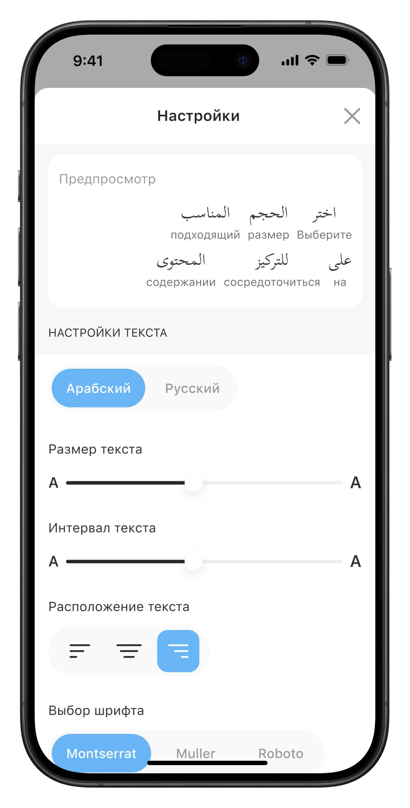
Словарь
Главное продуктовое решение: словарь работает не только как поиск значения слова, но и как инструмент изучения, систематизации и повторения лексики.
- Поиск и тематические коллекции. На главном экране словаря можно сразу искать слово или начать с готовой подборки по теме.
- Быстрый поиск по слову. При вводе слова система показывает подходящие карточки уже по набранным буквам. В превью сразу доступны ключевые данные: перевод, корень и число, поэтому не нужно открывать каждую карточку, чтобы найти нужное слово.
- Подробная страница слова. Полная карточка собирает всю необходимую информацию в одном месте. Набор данных адаптируется к части речи: для глаголов отображается спряжение, для имён — род и число, для частиц — перевод и соответствующая информация.
- Слово в контексте. Чтобы пользователь изучал не изолированный перевод, а связи слова с языком, на странице собраны однокоренные слова, синонимы, антонимы и примеры употребления.
- Коллекции для повторения. Найденные слова можно сохранять в собственные коллекции. Коллекции получают названия и могут объединяться в папки, поэтому пользователь может организовать лексику под свои учебные задачи.

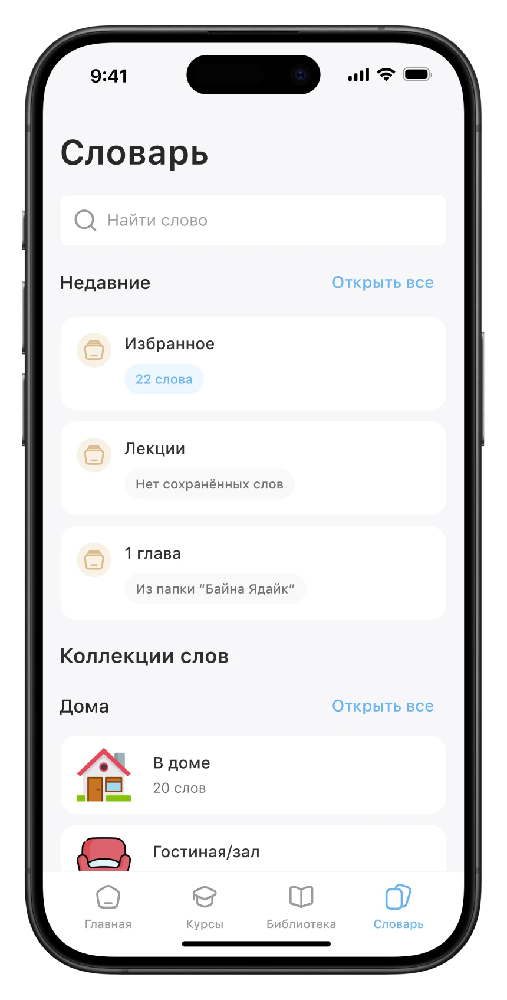
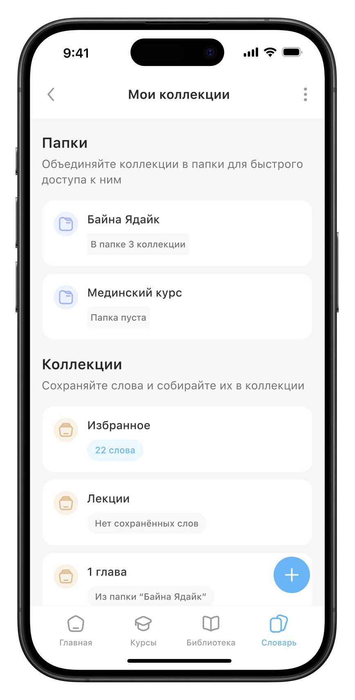
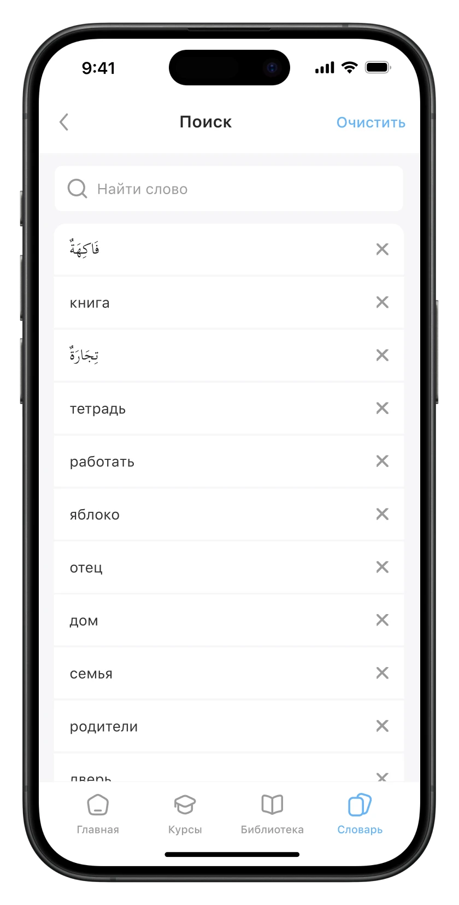
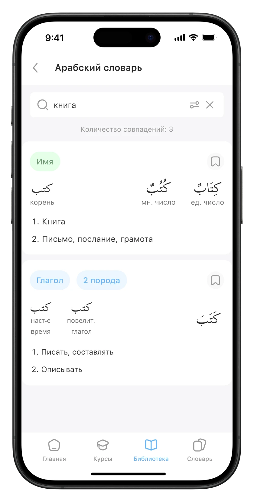
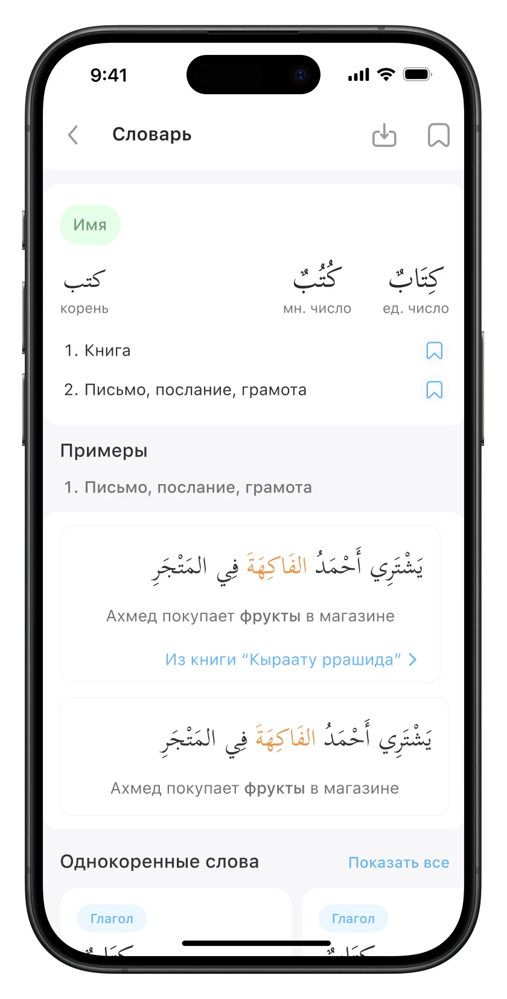
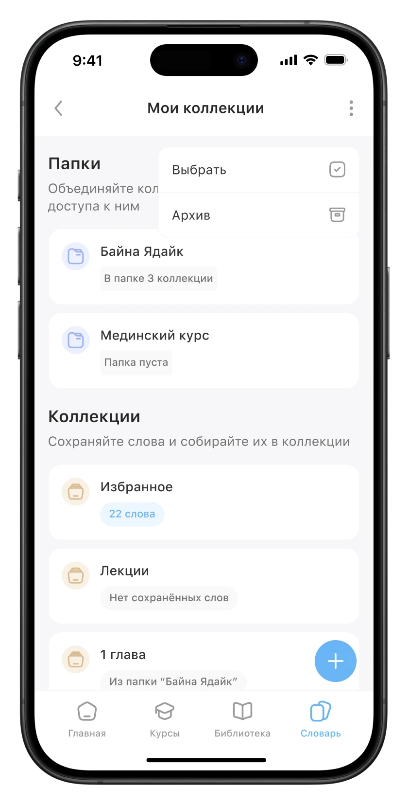
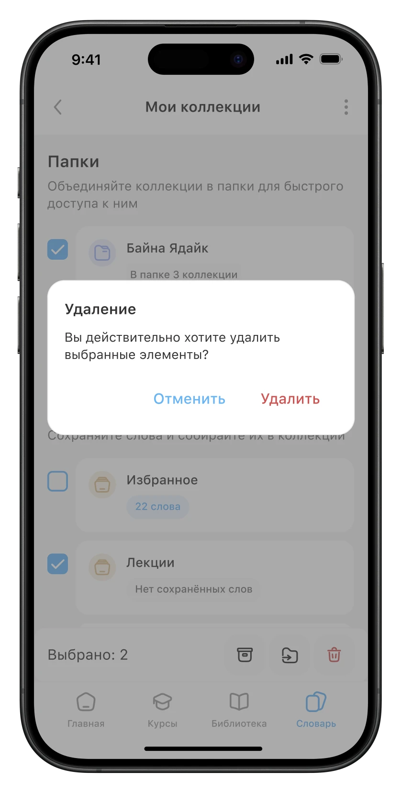
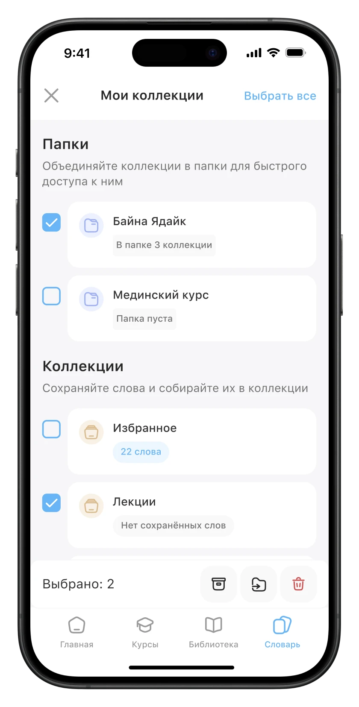
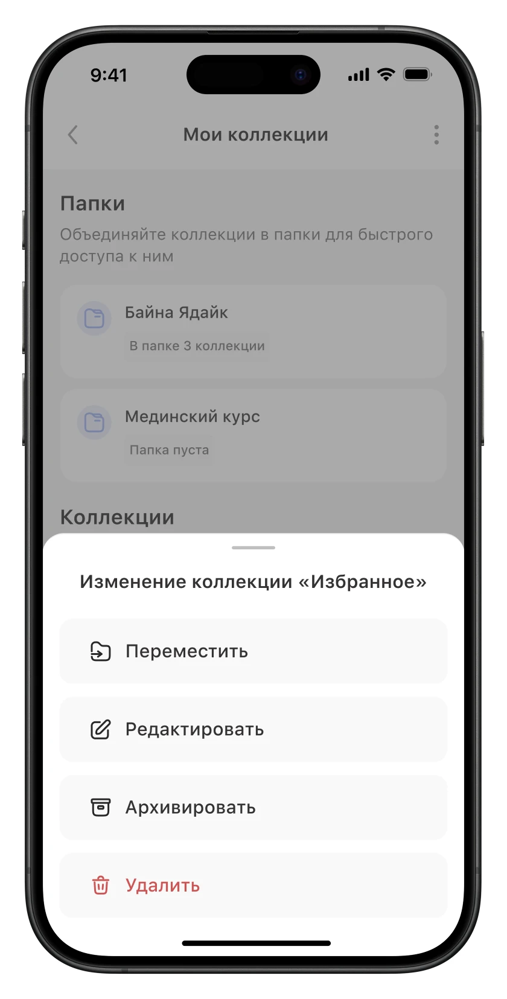
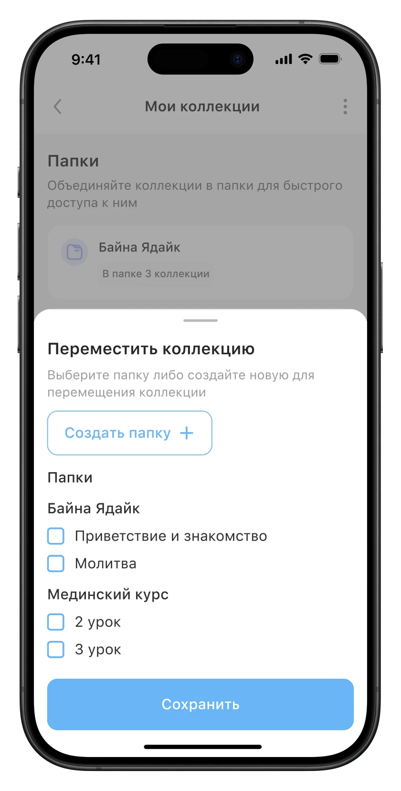
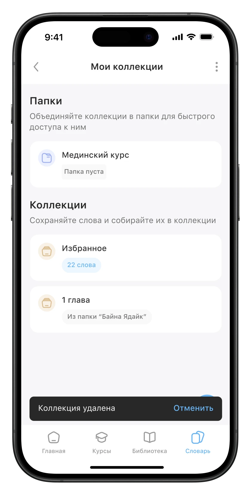
Результат
Что создано. Кроссплатформенное приложение для iOS и Android, спроектированное с нуля: информационная архитектура, ключевые сценарии, интерфейс и дизайн-система.
Что работает сейчас. Приложение закрывает два основных сценария: продолжить начатое обучение и выбрать материал, подходящий по уровню. Пользователь может изучать курсы и читать материалы библиотеки с телефона, в том числе без подключения к интернету.
Что подготовлено к развитию. Спроектирован сценарий работы со словарём — следующий шаг после запуска приложения. Он связывает лексику с курсами и материалами библиотеки и позволяет встроить работу со словами непосредственно в обучение.
- единая навигация — новые разделы можно добавлять без перестройки основной структуры;
- единая система уровней и категорий — новый контент подключается по существующим правилам;
- кроссплатформенная дизайн-система — общие компоненты и токены для iOS и Android;
- масштабируемая архитектура — новые образовательные сценарии можно добавлять в существующую структуру продукта.
Что дальше
Приложение запустило базовые сценарии обучения, но некоторые части продуктовой системы ещё предстоит связать между собой.
Довести словарь до релиза
Словарь — следующий важный элемент приложения. Его запуск позволит проверить, станет ли работа с лексикой регулярной частью обучения, если пользователю не нужно переходить в отдельный сервис.
Связать приложение с системой прогресса
Приложение вышло раньше, чем появилась система уровней и навыков. Следующий шаг — связать уроки с программой обучения и показывать, какую её часть пользователь уже освоил.
Проверять влияние приложения на регулярность
- время от запуска до первого действия;
- долю сессий, завершившихся уроком или главой;
- возврат к последнему материалу после перерыва;
- удержание на 1-й и 7-й день.
Развивать механики удержания
После формирования основной учебной системы можно добавлять ачивки, рекомендации по повторению, мотивационные механики и рейтинг. Все четыре решают одну задачу — удержание. Но удерживать имеет смысл продукт, в котором уже комфортно учиться. Поэтому приоритет был очевиден: сначала сделать обучение удобным и доступным, а механики удержания добавить следующим слоем — когда появятся данные и основа для их работы.